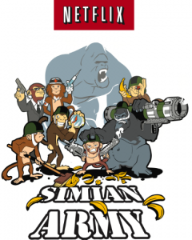
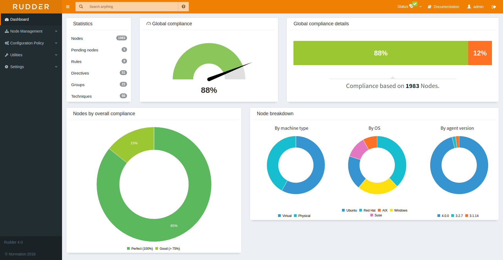

Onderwerp: DevOps
Gegeven door: Dries Dams van iAdvise
Locatie: Hogeschool PXL
Datum: 30/11/2016
Inleiding
Als inleiding werd een korte beschrijving van het bedrijf gegeven met de normen en waarden. iAdvice maakt deel uit van Cronos Group en werkt met klanten van België en Nederland.
Definitie
DevOps is een culturele en professionele beweging, meestal probeert men DevOps te definiëren door een aantal tools op te lijsten, maar dit is niet juist. Er wordt ook geprobeert om het als job titel te gebruiken maar dat is ook een foutief gebruik van het woord.
Het is een inclusieve beweging met als doel om ontwikkelaars en infrastructuur professionals beter samen te laten werken.
Dit is mogelijk door de traditionele piramidevormige bedrijfsstructuur te vervangen door een horizontale structuur waar iedereen met elkaar kan samenwerken en er een normale omgang kan zijn.
Geschiedenis van managementfilosofieën
Voordat de term DevOps uitgevonden werd waren er al reeds lang geleden ontwikkelmethoden.
- 1950: LEAN heeft zeven principes: voorkom verspilling, versterk het leereffect, beslis zo laat mogelijk, lever zo snel mogelijk, geef het team verantwoordelijkheid, kwaliteit, een geheel zien.
- 1986: NNPDG
- 1993: SCRUM,XP programming heeft als eigenschappen dat er aan pair programming gedaan wordt, veel planning, een continue process als team en een gedeelde kennis.
- 2001: Agile: Dit is juist na de .com bubble en anti-establishment periode ontstaan, Agile Manifesto werd geschreven door Mike Beedle, Ken Schwaber en Jeff Sutherland.
- 2009: DevOps: Patrick Debois geeft keynote, Andrew Shafer en Gene Kim schrijven boek over DevOps
Automatisatie
Het doel is om alles te automatiseren. Netflix geeft het grote voorbeeld: ze schreven zelf tools genaamd Siminian Army en Chaos Monkey. Deze programma’s hebben als taak om hun eigen diensten aan te vallen waarbij er volledige servers verwijdert worden. Op die manier kunnen ze hun infrastructuur testen op stabiliteit en de ingebouwde mogelijkheid tot automatisch herstel. 
Verzamel zoveel mogelijk informatie van systemen en geef deze weer op grote schermen met dashboards.
Dit heeft als doel om elke werknemer te kunnen betrekken. Elke keer dat een werknemer nu voorbij de schermen wandelt kan hij zelf een observatie maken en meldingen doen of zelfs advies geven om het dashboard duidelijker te maken. De systeembeheerder heeft een extra manier om meldingen te ontvangen waardoor hij sneller kan reageren op problemen. 
Deel alles: Hipchat, Slack en andere berichtendiensten zorgen ervoor dat iedereen verschillende gesprekken kan bijwonen, door de beslissingen in projecten transparant te houden zal iedereen zich meer betrokken voelen en zich meer inzetten.
Geef meer beheer aan ontwikkelaars door ze de mogelijkheid te geven om ChatOps commando’s sturen via chat. Ze kunnen zelf servers aan- en uitschakelen zonder daarvoor eerst tijd te verliezen omdat het aangevraagd moet worden aan een systeembeheerder.
Er zijn tegenwoordig veel verschillende afkortingen voor elke specialisatie in IT, hier is een kleine lijst zonder bepaalde volgorde:
- SECOPS
- NETSEC
- DEVNET
- DEVSEC
- SECNET
- OPSNET
- SECDEV
- NETOPS
- OPSDEV
- NETDEV
Ten slotte wilt de presentator dat we de afkorting DEVNETOPSEC gebruiken, het is een combinatie van alle positieve elementen:
- Culture
- Automation
- LEAN
- Measurement
- Sharing
Reflectie
Ik had al veel gehoord over Agile tijdens de lessen of seminaries maar ik snapte niet helemaal waarom het zo revolutionair gevonden werd. Nu dat ik de volledige geschiedenis heb kunnen bekijken zie ik de evolutie en de voordelen met elke nieuwe iteratie aan ontwikkelmethoden. DevOps vindt ik daarom heel interessant als manier omdat ontwikkelaars en systeembeheerders samen kunnen werken. Automatisatie vind ik ook essentieel omdat er dan veel meer bereikt kan worden met dezelfde tijd en personen.
Ik ben zelf soms ook gefrustreerd wanneer ik iets herhaaldelijk moet doen dat heel eenvoudig te automatiseren zou zijn, maar niet gedaan wordt omdat het niet nodig geacht wordt. Omdat ik op zo een momenten niet heel diplomatiek mijn redenering kan uitleggen kan het misschien zijn dat ik hun gedachten niet heb kunnen veranderen. In de toekomst zal ik daarom meer focussen op de voordelen in plaats van de nadelen van de huidige manier.
Tijdens het IT-project zullen wij, de systemen- en netwerkbeheer studenten moeten samenwerken met de applicatieontwikkelaars en de softwaremanagers. Indien ik de mogelijkheid heb zal ik zeker proberen om ChatOps te integreren en een soort van dashboard.
Ik vond het ook zeer interessant hoe bedrijven als Netflix onverwoestbare systemen opgericht hebben, ik heb zelf ook servers aangemaakt gehad en er dan een eigen naam aan gegeven maar ik snap nu dat dat eigenlijk geen goed manier is om met servers te werken. Het is beter om niet rechtstreeks commando’s in te geven en een server als een robot te behandelen met een nummer zoals 001.